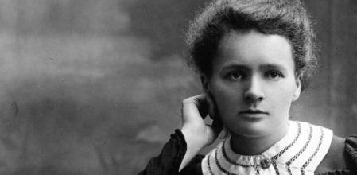

Marie Curie
Índice:
- Biografía.
- Tabla de fechas
- Lista de frases.
Biografía:
Marie Curie estaba interesada en los recientes descubrimientos de los nuevos tipos de radiación.
Wilhelm Roentgen había descubierto los en 1895, y en 1896 Antoine Henri Becquerel descubrió que
el uranio emitía radiaciones invisibles similares. Por todo esto comenzó a estudiar las radiaciones del
uranio y, utilizando las técnicas piezoeléctricas inventadas por Pierre, midió cuidadosamente las
radiaciones en la pechblenda, un mineral que contiene uranio. Cuando vio que las radiaciones del mineral
eran más intensas que las del propio uranio, se dio cuenta de que tenía que haber elementos desconocidos,
incluso más radiactivos que el uranio. Marie Curie fue la primera en utilizar el término 'radiactivo' para
describir los elementos que emiten radiaciones cuando se descomponen sus núcleos.
Su marido acabó su trabajo sobre el magnetismo para unirse a la investigación de su esposa, y en 1898 el
matrimonio anunció el descubrimiento de dos nuevos elementos: el polonio (Marie le dio ese nombre en honor de
su país de nacimiento) y el radio. Durante los siguientes cuatro años el matrimonio, trabajando en condiciones muy
precarias, trató una tonelada de pechblenda, de la que aislaron una fracción de radio de un gramo.
A continuación un enlace con información sobre la investigación de Marie Curie
Marie Curie y el descubrimiento del radio.
Tabla de fechas:
| Fecha |
Logros de Marie Curie
|
| 1867 |
Trabajó de institutriz |
| 1893 |
Licenciada en física |
| 1894 |
Recibe un premio en Polonia y se licencia en Matemáticas |
| 1903 |
Premio Nobel de física |
| 1911 |
Premio Nobel de química |

A continuación un enlace con información sobre la investigación de Rosalid Franklin:
Rosalind Franklin y la estructura del ADN
Lista de frases:
- “Estoy de acuerdo en que la fe es fundamental para tener éxito en la vida, pero no acepto tu definición de fe, la creencia de que hay vida tras la muerte.”
- “En mi opinión,
lo único que necesita la fe es el convencimiento de que esforzándonos en hacer lo mejor que podemos nos acercaremos al éxito, y que el éxito de nuestros propósitos, la mejora de la humanidad
de hoy y del futuro, merece la pena de conseguirse.”
- “La ciencia y la vida cotidiana no pueden y no deben ser separados.”